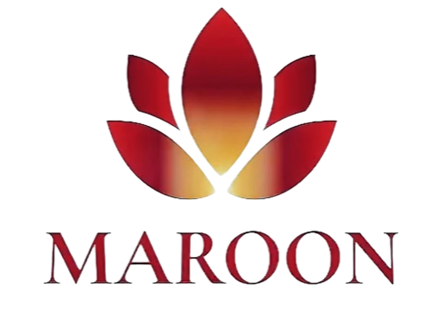
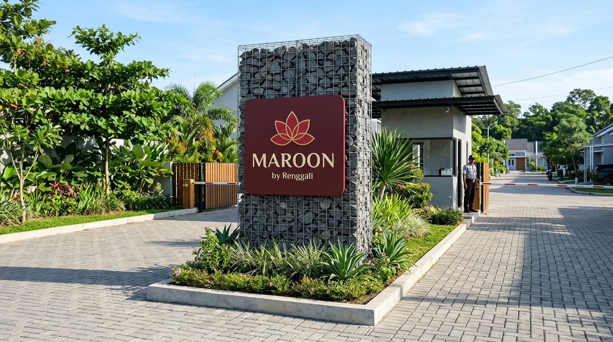
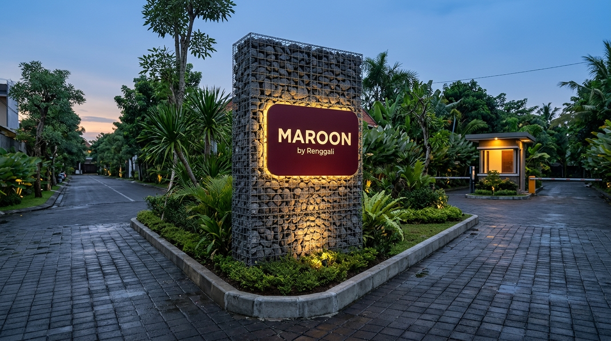
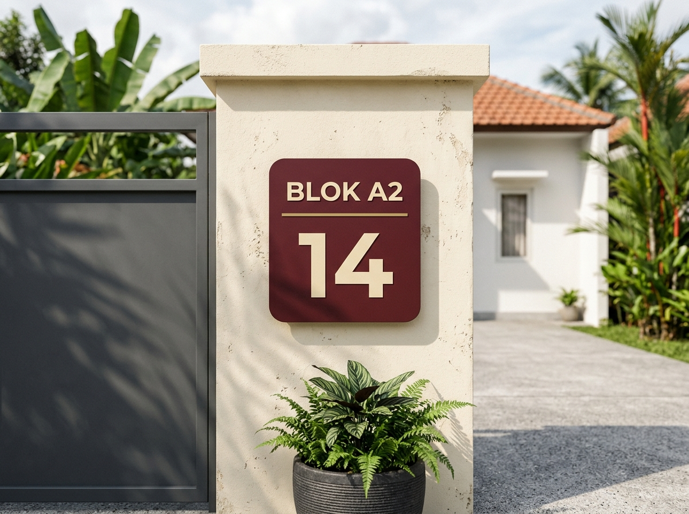
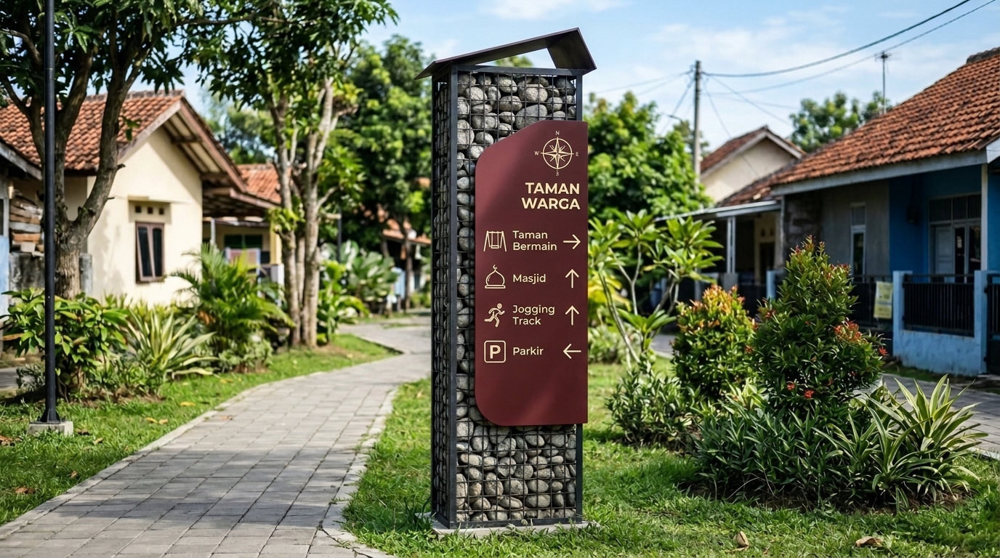
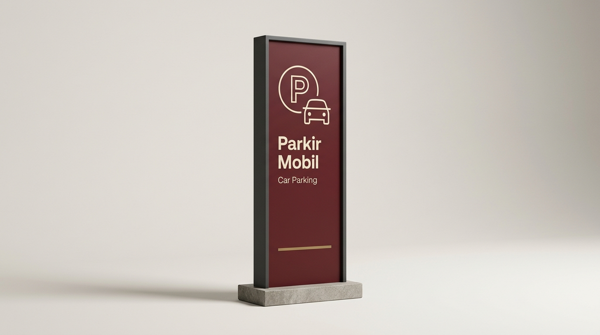
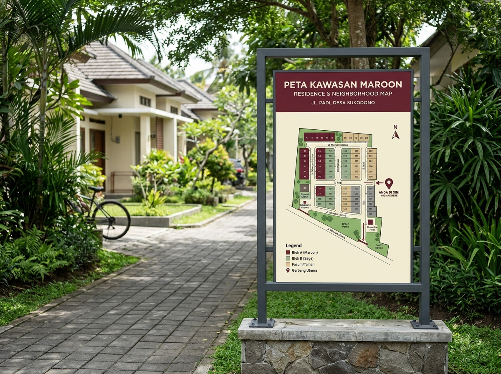

Digital Design Concept BookKonsep identitas kawasan dan sistem penunjuk arah untuk perumahan sederhana tropis MAROON by Renggali di Batam — fungsional, hangat, mudah diproduksi, dan berkarakter.

Perumahan sederhana tidak harus memiliki identitas visual yang terlihat seadanya. Melalui pendekatan Modern Organic Minimalism, MAROON by Renggali menghadirkan sistem branding dan wayfinding yang tertata, ramah bagi penghuni, dan mudah dikenali oleh tamu maupun kurir sejak titik masuk pertama.
Bentuk kelopak organik pada logo asli MAROON diterjemahkan menjadi sudut-sudut panel yang membulat lembut, dipadukan dengan material jujur yang tahan cuaca tropis pesisir Batam — seperti batu gabion, aluminium lapis matte, dan baja galvanis — agar tetap efisien secara biaya serta mudah dirawat dalam jangka panjang.
Garis bersih, proporsi tegas, dan tipografi geometris yang relevan lintas waktu.
Tekstur batu alam dan aksen kayu hangat yang menyatu dengan lanskap tropis.
Adaptasi bentuk kelopak logo ke dalam panel signage asimetris yang ikonik.
Kontras tinggi dan hierarki dwibahasa untuk navigasi cepat dan inklusif.
Konstruksi modular berbahan lokal yang realistis untuk perumahan sederhana.
Bebas ornamen berlebih sehingga tetap rapi dan elegan bertahun-tahun.
Ilustrasi berikut merupakan pemodelan konseptual tata letak kawasan untuk memetakan titik keputusan navigasi (decision points) penghuni dan pengunjung. Penempatan signage dirancang secara berjenjang: mulai dari monumen gerbang utama, papan direktori di area transisi, hingga penanda blok dan fasilitas umum.
Karena gambar kerja site plan resmi belum tersedia, seluruh zonasi blok (Blok A–D), jaringan jalan lingkungan, serta fasilitas pendukung pada diagram ini bersifat asumsi awal dan dapat disesuaikan mengikuti masterplan final.
Palet warna diturunkan langsung dari gradasi kelopak logo MAROON: Deep Maroon dan Burgundy menjadi latar panel utama dengan kontras tinggi terhadap teks Warm Ivory, sementara Muted Gold berfungsi sebagai aksen geometris tipis yang memberi kehangatan tanpa kesan berlebihan.
Pada sisi material, kombinasi batu alam/gabion, aluminium *powder-coated matte*, beton ekspos, dan aksen kayu olahan dipilih karena ketahanannya terhadap kelembapan serta paparan matahari tropis Batam, sekaligus menjaga biaya fabrikasi tetap terjangkau.
HEX #4E0E14
RGB 78, 14, 20
HEX #6E141B
RGB 110, 20, 27
HEX #F4EFE6
RGB 244, 239, 230
HEX #C89B4B
RGB 200, 155, 75
HEX #1E1E20
RGB 30, 30, 32
Kandang kawat galvanis isi batu pecah lokal untuk monumen utama.
Pelat 3mm lapis powder-coating Deep Maroon anti-silau & tahan karat.
Pelapis alas totem sekunder yang kokoh dan minim perawatan.
Pondasi & plinth netral yang ekonomis serta tahan benturan.
Aksen tiang area taman/playground yang tahan rayap dan lembap.
Seluruh pictogram dirancang menggunakan gaya monoline dengan ketebalan garis seragam dan sudut bingkai membulat yang selaras dengan karakter organik kelopak MAROON. Bentuk ikon dibuat sederhana agar langsung dipahami lintas usia dan bahasa dalam sekali lihat.
Setiap simbol dapat diproduksi dengan teknik stensil, stiker reflektif luar ruang, atau laser-cut pada panel aluminium matte tanpa kehilangan ketajaman detailnya.
Monumen vertikal setinggi 240 cm di pintu masuk kawasan memadukan struktur gabion batu alam dengan panel aluminium Deep Maroon bersudut membulat. Komposisi asimetris ini menciptakan titik fokus yang tegas dari jalan raya tanpa membutuhkan struktur gerbang masif yang mahal.
Pada malam hari, lampu sorot LED hangat di dasar gabion serta halo backlight di balik panel menjaga identitas MAROON by Renggali tetap terbaca jelas dan memberi rasa aman bagi penghuni yang pulang malam.

Konsistensi visual berlanjut hingga skala rumah tinggal: plakat nomor rumah, penanda blok di persimpangan, identitas pos keamanan, serta papan nama jalan. Seluruhnya mewarisi sudut panel membulat, warna Deep Maroon, dan garis aksen tipis Muted Gold.
Dengan tata letak angka yang besar dan kontras tinggi, penghuni, tamu, pengemudi ojek daring, hingga layanan darurat dapat mengenali alamat unit secara instan dari jarak 10–15 meter.

Di persimpangan utama dan jalur pejalan kaki, sistem penunjuk arah vertikal berbentuk totem dan tiang blade sign memandu penghuni menuju taman, masjid, area parkir, serta blok hunian secara efisien.
Penggunaan daftar vertikal yang rapi dengan panah arah di sisi kanan memudahkan mata memindai tujuan dalam hitungan detik, baik saat berjalan kaki maupun berkendara dengan kecepatan rendah di dalam kompleks.


Papan informasi kawasan (Residential Directory) ditempatkan di area transisi setelah gerbang masuk dan di dekat taman pusat. Elemen paling krusial adalah penanda "Anda Berada di Sini / You Are Here" berwarna emas untuk orientasi instan.
Peta disajikan dalam gaya grafis bersih dengan kode blok (A–D), nama jalan lingkungan, rute pejalan kaki, serta legenda pictogram agar pengunjung baru tidak perlu bertanya berulang kali.

Setiap fasilitas publik di dalam perumahan MAROON memiliki penanda spesifik yang mudah dipasang pada dinding bangunan, tiang taman, maupun tiang galvanis di tepi jalan: Masjid, Taman, Playground, Toilet Umum, Jogging Track, Parkir Mobil, Parkir Motor, hingga Area Sampah.
Untuk fasilitas yang belum terkonfirmasi keberadaannya pada tahap pengembangan saat ini, desain signage disajikan sebagai modul siap pakai apabila fasilitas tersebut diwujudkan.
Logo asli MAROON tetap mempertahankan tipografi serif klasiknya secara utuh. Untuk seluruh sistem informasi dan penunjuk arah, dipilih Plus Jakarta Sans — jenis huruf geometris-humanis modern dengan x-height tinggi dan bukaan karakter yang lebar sehingga sangat jelas dibaca dari kejauhan.
Angka pada penanda blok dan nomor rumah menggunakan bobot ExtraBold agar mudah dibedakan (seperti angka 3, 6, 8, dan 9) pada pencahayaan siang maupun malam hari.
Plus Jakarta Sans
Utama: Bold 72–80 pt
Sekunder: Regular 36–40 pt
9 × 9 cm (Totem)
6 × 6 cm (Blade)
Baut Angkur & Footing Beton
Proporsi signage diuji terhadap skala tubuh manusia rata-rata di Indonesia (pria 172 cm, wanita 160 cm, serta pengguna kursi roda 120 cm) agar informasi penting berada pada zona pandang yang nyaman tanpa menghalangi sirkulasi pejalan kaki.
Standar visibilitas memastikan setiap informasi dapat diakses secara adil oleh pejalan kaki, pengendara, lansia, maupun pengguna kursi roda. Zona informasi utama pada totem dan papan direktori ditempatkan pada ketinggian 90–170 cm dengan sudut pandang optimal 20°–30°.
Rasio kontras warna antara latar Deep Maroon (#4E0E14) dan teks Warm Ivory (#F4EFE6)
mencapai lebih dari 11:1 (WCAG AAA), sehingga tetap tajam di bawah terik matahari maupun
cahaya lampu jalan di malam hari.
Papan komposisi berikut menyatukan seluruh keluarga signage MAROON by Renggali dalam satu skala proporsional. Setiap elemen — dari monumen gerbang setinggi 240 cm hingga plakat nomor rumah 28 cm — berbagi bahasa bentuk, palet warna, tipografi, dan ikonografi yang utuh.
Simulasi penerapan seluruh elemen wayfinding di lingkungan nyata perumahan sederhana tropis MAROON by Renggali. Proporsi bangunan, vegetasi tropis, serta material jalan lingkungan disesuaikan dengan karakter hunian nyata di Batam agar evaluasi konsep dapat dilakukan secara objektif.